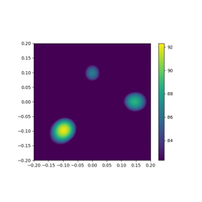
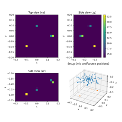

Introductory examples¶
Examples suitable for first-time users and beginners.

Three sources – Generate synthetic microphone array data.
Three sources -- Generate synthetic microphone array data.

Basic Beamforming – Generate a map of three sources.
Basic Beamforming -- Generate a map of three sources.

3D Beamforming with CLEAN-SC deconvolution.
3D Beamforming with CLEAN-SC deconvolution.